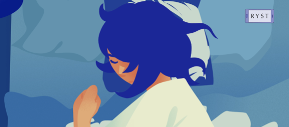
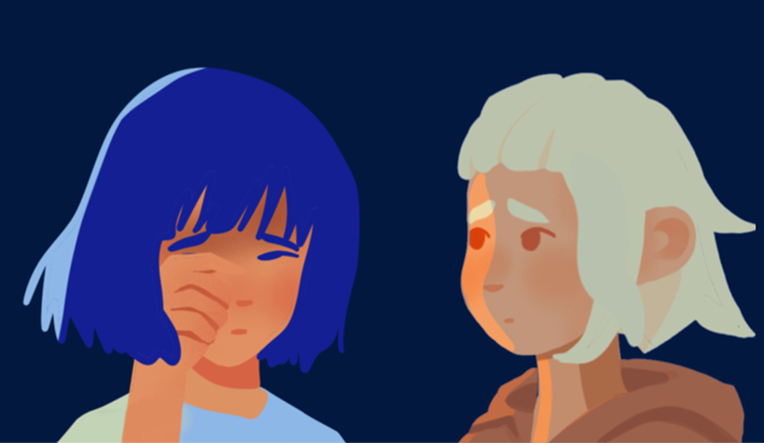

Learning through an interactive story
LIV was created to explore whether a story-based serious game could make knowledge about suicidal thoughts more accessible and engaging for students.
The game follows Liv, a young person navigating a difficult day. Through a combination of narrative, interaction and audiovisual design, players experience the story while being introduced to key facts and misconceptions surrounding suicidal thoughts.
Instead of presenting the information through a quiz or lecture, the project uses gameplay to make learning more engaging. The project was developed as a research study and later published as a paper.


Narrative
A story-driven experience designed to make the learning content feel personal and relatable.
Interaction
Mini-games and choices turn the player from a passive reader into an active participant.
Audiovisual design
Voice-over, inner monologue, music and colour help communicate the story and its emotional tone.
Learning
Designed to correct common myths about suicidal thoughts.